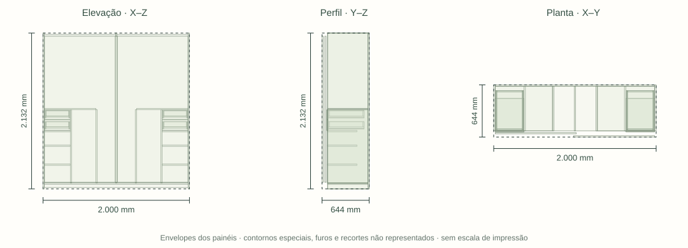

P01 · Quarto · FICHA R13 / MODELO R45 · mm
Roupeiro
Envelope nominal do conjunto, incluindo componentes e reservas. Peças abaixo têm medidas próprias.

Medidas internas e encontros
Dois setores superiores com 973 de largura; profundidade 550. Base topo 80; varões superiores eixo 2050. Nichos inferiores de sapatos 355×400; alturas livres 242 /242 /182 entre base e níveis 340/600/800. Varões baixos 332 entre divisórias.
Acabamentos
Interiores Branco TX. Faces aparentes: Amadeirado; referência Arenza. Faces registradas separadamente; não implica chapa dupla pronta.
| Aplicação | Material / acabamento | Situação |
|---|---|---|
| Interiores identificados | Branco TX | Escolhido pelo usuário em 23/10/2026; fabricante/código e substrato ainda técnicos |
| Faces aparentes | Amadeirado; referência Arenza | Escolha documental preservada; distinguir cada face da mesma peça |
A especificação documental vigente prevalece sobre cores antigas do modelo. Código comercial não informado permanece a definir.
Peças e espessuras
| ID / peça | Qtd. | C × L · mm | Esp. · mm | Material | Forma |
|---|---|---|---|---|---|
| Peca206Lateral direita | 1 | 2.132 × 568 | 18 | face interna Branco TX; face aparente Amadeirado, referência ArenzaDocumento vigente | Retangular |
| Peca207Lateral esquerda | 1 | 2.132 × 568 | 18 | face interna Branco TX; face aparente Amadeirado, referência ArenzaDocumento vigente | Retangular |
| Peca208Fundo | 1 | 2.096 × 1.964 | 18 | Branco TX · faces internasDocumento vigente | Retangular |
| Peca209Base · topo 80 mm | 1 | 1.964 × 550 | 18 | Branco TX · faces internasDocumento vigente | Retangular |
| Peca210Divisória | 1 | 2.052 × 550 | 18 | Branco TX · faces internasDocumento vigente | Retangular |
| Peca211Sapateira · três níveis | 1 | 400 × 355 | 18 | Branco TX · faces internasDocumento vigente | Retangular |
| Peca212Sapateira · três níveis | 1 | 400 × 355 | 18 | Branco TX · faces internasDocumento vigente | Retangular |
| Peca213Sapateira · três níveis | 1 | 400 × 355 | 18 | Branco TX · faces internasDocumento vigente | Retangular |
| GavetaComumR08Lateral comum esquerda · Gaveta de roupa - proposta R08 | 1 | 490 × 100 | 15 | Branco TX · faces internasDocumento vigente | Recortado/especial |
| GavetaComumR001Lateral comum direita · Gaveta de roupa - proposta R08 | 1 | 490 × 100 | 15 | Branco TX · faces internasDocumento vigente | Recortado/especial |
| GavetaComumR002Fundo comum · Gaveta de roupa - proposta R08 | 1 | 490 × 323 | 15 | Branco TX · faces internasDocumento vigente | Recortado/especial |
| GavetaComumR003Traseira comum · Gaveta de roupa - proposta R08 | 1 | 313 × 73 | 15 | Branco TX · faces internasDocumento vigente | Retangular |
| GavetaComumR004Dianteira comum16 · Gaveta de roupa - proposta R08 | 1 | 313 × 73 | 16 | Branco TX · faces internasDocumento vigente | Recortado/especial |
| GavetaComumR005Frente preservada · Gaveta de roupa - proposta R08 | 1 | 353 × 142 | 18 | Branco TX · faces internasDocumento vigente | Recortado/especial |
| GavetaComumR012Lateral comum esquerda · Gaveta de roupa001 - proposta R08 | 1 | 490 × 100 | 15 | Branco TX · faces internasDocumento vigente | Recortado/especial |
| GavetaComumR013Lateral comum direita · Gaveta de roupa001 - proposta R08 | 1 | 490 × 100 | 15 | Branco TX · faces internasDocumento vigente | Recortado/especial |
| GavetaComumR014Fundo comum · Gaveta de roupa001 - proposta R08 | 1 | 490 × 323 | 15 | Branco TX · faces internasDocumento vigente | Recortado/especial |
| GavetaComumR015Traseira comum · Gaveta de roupa001 - proposta R08 | 1 | 313 × 73 | 15 | Branco TX · faces internasDocumento vigente | Retangular |
| GavetaComumR016Dianteira comum16 · Gaveta de roupa001 - proposta R08 | 1 | 313 × 73 | 16 | Branco TX · faces internasDocumento vigente | Recortado/especial |
| GavetaComumR017Frente 130 (R29, era 142) · Gaveta de roupa001 - proposta R08 | 1 | 353 × 130 | 18 | Branco TX · faces internasDocumento vigente | Recortado/especial |
| Peca226Sapateira · três níveis | 1 | 400 × 355 | 18 | Branco TX · faces internasDocumento vigente | Retangular |
| Peca227Sapateira · três níveis | 1 | 400 × 355 | 18 | Branco TX · faces internasDocumento vigente | Retangular |
| Peca228Sapateira · três níveis | 1 | 400 × 355 | 18 | Branco TX · faces internasDocumento vigente | Retangular |
| GavetaComumR024Lateral comum esquerda · Gaveta de roupa002 - proposta R08 | 1 | 490 × 100 | 15 | Branco TX · faces internasDocumento vigente | Recortado/especial |
| GavetaComumR025Lateral comum direita · Gaveta de roupa002 - proposta R08 | 1 | 490 × 100 | 15 | Branco TX · faces internasDocumento vigente | Recortado/especial |
| GavetaComumR026Fundo comum · Gaveta de roupa002 - proposta R08 | 1 | 490 × 323 | 15 | Branco TX · faces internasDocumento vigente | Recortado/especial |
| GavetaComumR027Traseira comum · Gaveta de roupa002 - proposta R08 | 1 | 313 × 73 | 15 | Branco TX · faces internasDocumento vigente | Retangular |
| GavetaComumR028Dianteira comum16 · Gaveta de roupa002 - proposta R08 | 1 | 313 × 73 | 16 | Branco TX · faces internasDocumento vigente | Recortado/especial |
| GavetaComumR029Frente preservada · Gaveta de roupa002 - proposta R08 | 1 | 353 × 142 | 18 | Branco TX · faces internasDocumento vigente | Recortado/especial |
| GavetaComumR036Lateral comum esquerda · Gaveta de roupa003 - proposta R08 | 1 | 490 × 100 | 15 | Branco TX · faces internasDocumento vigente | Recortado/especial |
| GavetaComumR037Lateral comum direita · Gaveta de roupa003 - proposta R08 | 1 | 490 × 100 | 15 | Branco TX · faces internasDocumento vigente | Recortado/especial |
| GavetaComumR038Fundo comum · Gaveta de roupa003 - proposta R08 | 1 | 490 × 323 | 15 | Branco TX · faces internasDocumento vigente | Recortado/especial |
| GavetaComumR039Traseira comum · Gaveta de roupa003 - proposta R08 | 1 | 313 × 73 | 15 | Branco TX · faces internasDocumento vigente | Retangular |
| GavetaComumR040Dianteira comum16 · Gaveta de roupa003 - proposta R08 | 1 | 313 × 73 | 16 | Branco TX · faces internasDocumento vigente | Recortado/especial |
| GavetaComumR041Frente 130 (R29, era 142) · Gaveta de roupa003 - proposta R08 | 1 | 353 × 130 | 18 | Branco TX · faces internasDocumento vigente | Recortado/especial |
| Peca241Divisória | 1 | 1.002 × 550 | 18 | Branco TX · faces internasDocumento vigente | Retangular |
| Peca242Divisória | 1 | 1.002 × 550 | 18 | Branco TX · faces internasDocumento vigente | Retangular |
| Peca243Divisória | 1 | 1.002 × 550 | 18 | Branco TX · faces internasDocumento vigente | Retangular |
| Peca244Divisória | 1 | 1.002 × 550 | 18 | Branco TX · faces internasDocumento vigente | Retangular |
| Peca245Prateleira curta · topo 1100 | 1 | 705 × 550 | 18 | Branco TX · faces internasDocumento vigente | Retangular |
| Peca246Prateleira curta · topo 1101 | 1 | 705 × 550 | 18 | Branco TX · faces internasDocumento vigente | Retangular |
| Peca247Roupeiro — porta direita — deslizar para esquerda — frente proposta | 1 | 1.999 × 995 | 18 | face interna Branco TX; face aparente Amadeirado, referência ArenzaDocumento vigente | Retangular |
| Peca248Roupeiro — porta esquerda — deslizar para direita — frente proposta | 1 | 1.999 × 995 | 18 | face interna Branco TX; face aparente Amadeirado, referência ArenzaDocumento vigente | Retangular |
C e L são as duas maiores dimensões do envelope local, sem indicar sentido do veio. Espessura é a menor dimensão geométrica. Recortes e furação não podem ser recuperados destas três medidas. Fita de borda e folgas não foram descontadas; lista nominal, não plano de corte.
Ferragens e ligações
| Qtd. | Ferragem / referência | Situação | Montagem / conferência |
|---|---|---|---|
| 2 kit de 1 porta | Kit de correr para duas folhasRometal RO-62 + Guia Flex 4032 | candidato | Cada kit contém 2 carros, 2 guias e 2 freios; conferir retenções e conteúdo comercial. |
| 4 unidade | Carros integrantes dos kits RO-62Componentes do RO-62 / Guia Flex 4032 | candidato | Já incluídos nos 2 kits; linha de conferência, não compra adicional. |
| 4 unidade | Guias integrantes dos kits RO-62Componentes do RO-62 / Guia Flex 4032 | candidato | Já incluídos nos 2 kits; linha de conferência, não compra adicional. |
| 4 unidade | Freios integrantes dos kits RO-62Componentes do RO-62 / Guia Flex 4032 | candidato | Já incluídos nos 2 kits; linha de conferência, não compra adicional. |
| A definir trecho / barra a detalhar | Trilhos inferioresRometal RM-023 | pendente | Quantidade comercial e comprimento de corte dependem do plano das vias; não converter quatro kits em quatro barras. RM-025 largura28 e RM-023 largura34 conforme manual citado. |
| A definir trecho / barra a detalhar | Trilhos superioresRometal RM-025 | pendente | Quantidade comercial e comprimento de corte dependem do plano das vias; não converter quatro kits em quatro barras. RM-025 largura28 e RM-023 largura34 conforme manual citado. |
| A definir unidade | Parafusos carros RO-623,5 × 14 CC | pendente | Dimensões documentais; falta contar furos efetivos da configuração e verificar piloto/penetração. |
| A definir unidade | Parafusos guias/freios RO-623,5 × 22 CC | pendente | Dimensões documentais; falta contar furos efetivos da configuração e verificar piloto/penetração. |
| A definir unidade | Parafusos retenção RO-623,5 × 12 CF | pendente | Dimensões documentais; falta contar furos efetivos da configuração e verificar piloto/penetração. |
| 4 par | Corrediças ocultas, 500 mmFGVTN 54FGOC12500TSX0 | candidato | Capacidade publicada35kg; curso475 ±3mm, não500. Modelo de caixa legado exige compatibilização. |
| 4 par E/D | Engates das corrediças 500Par esquerdo/direito correspondente ao kit FGVTN 500; SKU não confirmado | pendente | Não duplicar se os engates vierem incluídos. Não misturar convencional e opcional3D. |
| A definir unidade | Parafusos das guias e engatesA definir | pendente | Definir pelo desenho e material reais; não quantificar pela geometria de outra família. |
| 4 corte | Varões, cortes nominaisCandidato Ø20 Häfele 801.01.702; alternativa Ø25 Bigfer 0907266400 | candidato | 2 vãos973 +2 vãos332 =2610mm nominais. O corte final desconta encaixe dos suportes; não cortar pelos vãos. |
| 8 unidade | Suportes terminais dos varõesØ20 Häfele 803.51.702; alternativa Ø25 Bigfer 9168010111 | candidato | 2 terminais por varão; Ø20 e Ø25 pertencem a alternativas incompatíveis entre si. |
| 2 unidade | Suportes centrais dos dois varões longosHäfele 802.02.220 para a alternativa Ø20 | candidato | Somente se adotados e compatibilizados; não somar como compra liberada. |
| A definir conector / fixador | Ligações dos painéis da carcaçaA definir | pendente | 33contatos diretos retangulares identificados nesta amostra. Escolher ligação por interface/carga/acesso; zero na amostra não significa ausência de uniões. |
Quantidade de referência não equivale a compra liberada. Itens candidatos conservam seu status até fechar compatibilidade.
Roteiro de montagem e compatibilização
- Preservar quatro gavetas internas e dois setores superiores; regular o sistema real de correr antes de conferir acesso às gavetas.
- Montar divisórias e apoios com ligação dimensionada; contato nominal não comprova suporte.
- AP = vão vertical −35 mm e transpasse30 mm são compatíveis nominalmente. Passo38 e distribuição10/25 da folga vertical são hipóteses, não cotas executivas.
- Caixas FGVTN em laterais15: largura interna A−41 e externa A−11; folga centrada nominal5,5mm/lado. Compatibilizar caixa/recortes/engates antes do corte.
- Furos de terminais opostos na divisória18 devem ser desencontrados ou ter profundidades compatíveis.
Fechamentos técnicos deste móvel
Tratáveis com projeto, marcenaria ou fabricante; não dependem de medir o apartamento.
- Confirmar envelope real, retenção antidescarrilamento, padrão de furação, seções completas dos trilhos e posição dos freios.
- Dimensionar suporte dos trilhos e ligações da base/topo; capacidade de60 kg por porta não dimensiona a marcenaria.
- Determinar datum vertical, recortes traseiros e desenho dos engates da FGVTN; o STEP400 não deve ser escalado para500.
- Fechar carga útil incluindo massa da caixa, frente, acessórios e conteúdo; 35kg não significa35kg de conteúdo.
- Compatibilizar suportes centrais: eixo superior82mm abaixo da base do maleiro e inferior52mm abaixo da prateleira; altura externa63 do suporte não é a cota eixo–face.
- Definir carga dos varões e das prateleiras; rigidez de tubo e fixação no MDF são verificações separadas.
- Fechar mapa de uniões por interface: material real, conector, quantidade por encontro, distâncias de borda, piloto/profundidade e acesso da ferramenta; contato de borda não é ligação dimensionada.
- Portas externas do roupeiro: amadeirado/Arenza; interiores e gavetas internas Branco TX. offwhite no CAD é referência anterior; não recolorido nesta auditoria.
- Resistência dos varões e suportes, carga das prateleiras, montagem das divisórias; mecanismo correr em estudo próprio.
- Definir produto construtivo da chapa, classe/adequação ao uso e espessura de compra; menor dimensão do CAD não é automaticamente espessura executiva.
- Definir união, sequência, folgas e mapa de usinagem com a ferragem selecionada; não substituir essa decisão por medição de campo.
- Cor interna resolvida: Branco TX. Especificar fabricante/código, substrato, classe e processo de composição; são decisões técnicas, não medições de campo.
- Definir mapa de faces e solução construtiva para Branco TX interno + padrão aparente; não presumir chapa dual comercial pronta.
- Fechar fita/selagem por aresta, sentido do veio nas faces decorativas e usinagens com os produtos definidos.
2 conferências para este móvel. Abrir levantamento de campo →
Rastreabilidade documental
- 01_Projeto/Consolidacao_R45_2026-10-23/Portas_e_articulacoes/Relatorio.html
- 01_Projeto/Modelo_FreeCAD/02_Revisoes_e_estudos/Correr_R14_2026-10-14/README.md
- 01_Projeto/Consolidacao_R45_2026-10-23/Gavetas/Resultado.html
- 01_Projeto/Consolidacao_R45_2026-10-23/Gavetas/Ferragens_quantitativo.csv
- 01_Projeto/Consolidacao_R45_2026-10-23/Inventario/Varoes.md
- 01_Projeto/Consolidacao_R45_2026-10-23/Inventario/Matriz_20_modulos.md
- 01_Projeto/Consolidacao_R45_2026-10-23/Inventario/Interfaces_retangulares.md
- 01_Projeto/Registro_de_decisoes.md
- 01_Projeto/Estudo_interativo/src/cad-data.js
- 01_Projeto/Estudo_interativo/fabrication/Decisao_acabamentos_R13.md